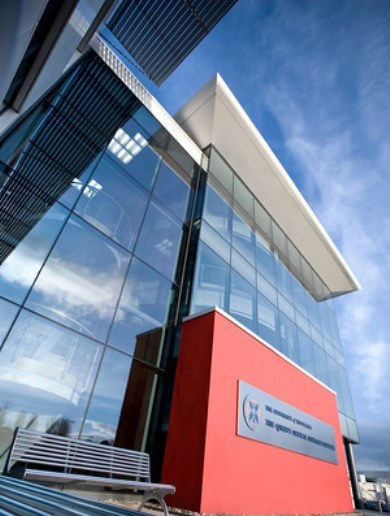
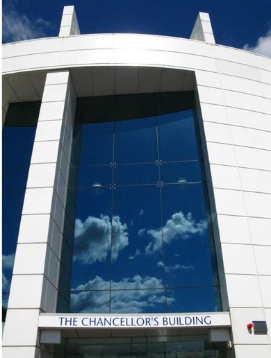

|  |  |
| Queen's Medical Research Institute | School of medicine |
Welcome to the homepage of the Hoskins group, based within the College of Medicine and Veterinary Medicine at the University of Edinburgh. The group carries out physical and computational research in the areas of medical physics and biomedical engineering.
|
|
|